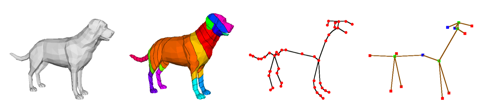

We develop methods combining computational geometry and machine learning to retrieve 3D shapes, map low-resolution surfaces or tile surfaces using quadrangles

3D shape retrieval
3D shape retrieval is becoming an acute issue for numerous applications that span from CAD to serious games to biomedicine and all contexts where it is fundamental to automatically retrieve geometric information from a collection of 3D models. This paper addresses 3D shape retrieval in terms of a graph-based description and the definition of a corresponding similarity measure. For this purpose, 3D models are represented as bags of shortest paths defined over well chosen Extended Reeb graphs, while the similarity between pairs of Extended Reeb graphs is addressed through kernels adapted to these descriptions. Results are comparable with the best results of the literature, and the modularity and evolutivity of the method ensure its applicability to other problems, from partial shape matching to classification.
Low-resolution Surface Mapping
There are several ways to produce 3D acquisitions from a real object (volumic acquisitions, point clouds generated from 3D scanners or cameras) Both of the data structures are usually turned into surfaces described by triangles, using isosurface reconstruction methods . Due to the precision and resolution, the resulting virtual surface may not capture the full topological and/or geometrical details of the original surface, and are prone to artifacts that misrepresent the data.
Wa propose here to tackle the problem of mapping a surface acquired from a real object onto a piece of the plane, taking into account the topological and geometrical properties of the surface, as well as the specificity of low-resolution acquisitions. We introduce a cutting process used to manage the topological constraint of the one-to-one mapping, with some speedup improvements. Specific geometrical constraints linked to the low resolution context can be introduced
In medical imaging, an unfolding approach has been described in a previous work, to produce a flattened map of the region of interest on the cortical surface, using T1-weigthed Magnetic Resonance Imaging scans. After some segmentation steps and a surface reconstruction, a mesh is obtained, modeling the region of interest on the cortical surface. The cutting method used here did not take into account geometry, producing maps with overlaps for high genus original surfaces. The approach described in here was applied to the meshes stemming from the original data. The resulting surface was then unfolded using classical unfolding tools.
(a): A neighbourhood of a central sulcus extracted from the original volumic data. (b), (c), (d) : Cortical maps unfolded by Circle Packing after cutting steps (naïve, topological, and patching + topological). Dark grey shows regions of overlappings.
Cutting Organic Surfaces
Mapping a given surface onto a piece of the plane is an usual problem, and conformal mappings with border free approaches are classical as non-distorting methods. However, algorithms of this category are only able to produce a mapping from a surface topo- logically equivalent to a disc. In the general case, a topological cutting is thus required. The approach we are reporting here is a method that does not only take into account the topologi- cal properties by cutting the original surface into a disc, but also the the geometrical properties by globally selecting the local extrema of original arm- like surfaces, we called organic surfaces.
Surface tiling
Subdividing a surface into tubular regions is an abstraction of many segmentation problems, stemming from various applications from medical imaging to computer graphics. A tubular region, we will call a (topological) cylinder, can be defined as a surface homeomorphic to a cylinder, i.e. of genus zero with two boundaries. Tiling a surface with cylinders is a topological question, since the minimal number of cylindrical patches that will segment the surface is defined by its topology. It’s also a geometrical issue, since the connections between cylinders have to be driven by the shape of the surface. Moreover, some specific extrusions can be described by their own cylinder. We describe a formalism for segmenting a surface into cylinders using n-loops (an original generalization of the loops) as a cutting tool, to monitor the shape and length of the junctions. Using this formalism, the combinatorial configurations of the junctions between cylinders are precisely described, and the structure of the tilings can be exploited in the applicative fields.
Surface quadrangulations using scalar functions
Decomposing surfaces into quadrangle regions is a relevant issue both from a theoretical and an applicative point of view, and specific approaches have been described and applied in several domains. Control over the tiling topology and tile size and number is important as these factors highly influence the applicability, performance and use of the resulting quadrangulation. In this work, we describe an original approach to tile a surface with large quadrangles, satisfying combinatorial, geometrical and topological constraints. The large tiles resulting from our cutting process can be easily fitted by NURBS because of the properties of this decomposition. The topological control is managed through the critical points of a scalar function defined on the surface, and the cutting paths are not necesserily following the original mesh edges. These two specificities ensure that our approach is highly adjustable, and can include manual or automatic adjustements by modifying the scalar function. Results are presented, assessed and tested w.r.t. robustness and stability.